Why Her Story Matters
Kassidy's development arc stands out because it was shaped by real challenge, real injustice, and a real response. Her path was not a straight line. It included two years of building her game in a boys baseball league, a transfer into girls softball that exposed her to preferential coaching and systemic sidlining, a formal complaint to the league board, and a mid-season transition into a more competitive environment — where she immediately began producing and contributing to a championship season.
That sequence helped build more than skills. It built toughness, adaptability, self-assurance, and the kind of composure that shows up when it counts. She did not quit under pressure. She produced when given the opportunity to play.
Origin Story — Before 2023
NAO League • Boys Baseball • 6U • 2 Seasons
Before Kassidy ever set foot on a girls softball diamond, she spent two full seasons playing boys baseball at NAO — and excelling at it. She handled the most ball-intensive defensive positions in youth ball: pitcher, second base, and first base. Her father Jeremiah coached the team for both seasons.
She was a major contributor to a mostly-boys team, trusted with the ball at pitcher and in the infield because she'd earned it through her skills. That foundation — catcher toughness, position versatility, and a competitive spirit — is what she carried into 2023.
2023 Development Timeline
Kassidy joined GYGSA's 8U Macaws — her first year in girls softball — alongside her step-brothers (twin boys who joined GYBA's Arsenal at the same time). The family's intention: continue building her skills in a new environment while introducing her to softball.
Before the first game, Coach Reese Bruechner distributed position assignment sheets to each player. Kassidy's assignment: Starting Pitcher · 1st Base (backup) · Outfield. You don't assign a player to pitcher or first base unless you trust them with the ball. The family joined with that expectation.
After Game 1 at pitcher, Kassidy was moved to an outfield/bench rotation and stayed there. The coach had reversed his own position assignment, placing Kassidy — along with 6 of the other 12 girls — into a rotating non-role. The same five or six players (all coaches' children) occupied every infield position, every inning, every game.
"She's not coachable."
— Coach Reese Bruechner, to Kassidy's father • formally rebutted with documented evidenceGame-by-game usage — documented
| Game | Role | At-bats | Status |
|---|---|---|---|
| 1 | Starting pitcher | Full | As assigned |
| 2–3 | Outfield / bench rotation | Limited | Reversed |
| 4–5 | Outfield / bench rotation | 1 at-bat per game | Minimal |
| 6 | Outfield rotation | 2 at-bats | Minimal |
Team record through this stretch: 0–6. Infield players made many mistakes each game yet maintained their positions. Coach was suspended after Game 1 for a sportsmanship incident and acknowledged it on team chat.
During Games 7–8, Kassidy made two standout plays that earned her a lasting nickname. While playing left field — with GYGSA league president Tim present to evaluate a formal complaint — she tracked down and tagged out base runners twice from left field. Her father's nickname after: Clutch Cargill.
Despite this, the pattern continued. A formal written complaint was submitted to the GYGSA board documenting the inequitable treatment of 7 of 13 players. The board president addressed it directly, confirmed he witnessed the game, and indicated coaches would be reviewed before the next season vote.
Game 10 — the final Macaws game — Kassidy started as the only player on the bench and batted last. This followed an exchange in which the coach had warned that missing practices would mean reduced role — a retaliatory power move, as Kassidy had actually been getting more reps by playing in both leagues simultaneously.
"Last game was the 1st time I saw a sadness in Kassidy. When we were leaving the fields she told her mom that she just wanted to play baseball."
— Jeremiah Cargill, resignation note to Macaws teamThe family formally resigned from the Macaws and submitted a letter to the team, the GYGSA board complaint, and the league president — requesting both accountability and systemic improvement for the other 6 girls still in the same situation.
With the Macaws resignation filed, Jeremiah made a personal plea to GYBA president Tommy Lockhart — asking for a mid-season exception to add Kassidy to her step-brothers' baseball team, Romo's Arsenal. The VP had initially declined. The president approved it himself the next morning.
"I have decided to make an exception to allow her to play. Your experience reaffirms why we have rotation rules in our lower divisions."
— Tommy Lockhart, GYBA President • April 4, 2023Arsenal's coach Romo already had a spare jersey from a player who never showed. Kassidy wore #21.
Kassidy's first Arsenal game was documented play by play. She started at pitcher, made the first two outs of the game — a fielded ground ball up the middle and a caught pop-up in the first inning — then caught another pop fly at third base in the fourth. She got a hit every time at bat and ran the bases with authority. Arsenal won, beating the Gators — one of the top three teams in the league.
Coaches Romo and Mudd were the defining variable. They were described as hard on the entire team, harder on their own kids, pushing everyone to make plays and correcting every mistake without exception. In that environment, Kassidy didn't just keep up — she absorbed corrections in real time. Her father wrote that you could literally watch comprehension happen while coaches corrected her. Both coaches recognized her quickly.
The growth translated. Kassidy contributed to a team that swept every championship available to them: the opening tournament, the regular season #1 spot (secured in the final game), and the end-of-season tournament — including wins over top-ranked opponents.
Coach's words after the triple: "If you want to know what it's like to win the opening tournament, regular season, AND the end of season tournament — look right here. This is what it looks like."
The Arsenal triple championship had barely finished when two different coaches called the same day — from two different programs, two different sports. Coach Brian from the Bananas select softball organization invited Kassidy to open practices. On that same day, Coach Romo called to invite her to join a D1 competitive baseball team. Both calls, same afternoon. That doesn't happen unless people have been watching.
The family went to 2–3 Bananas open practices. Kassidy held her own in a select-level environment she'd never been in — different sport, different caliber, different room. The Bananas extended the invitation to join the roster. The D1 baseball slot was also on the table.
They turned down the Bananas.
Not because the opportunity wasn't real. Because Romo had believed in Kassidy from the very first practice — in a season where she came from nowhere, mid-roster, mid-season — and had helped turn a difficult year into a championship run. One more season with Arsenal felt like the right call. Loyalty over opportunity. The Bananas could wait.
"That same day Coach Romo also called to invite Kassidy to join a D1 baseball team. We ultimately decided to decline the Bananas invite to have one more season with Romo's Arsenal."
— Jeremiah CargillAfter the Arsenal run concluded, the next invitation came: a D1 kid-pitch 10U boys baseball team. Not recreational. Not instructional. Full kid-pitch at the D1 level, competing against boys at one of the most developmental pivots in youth baseball — the age where the game starts separating players. Kassidy was in.
The Panthers 10U D1 baseball chapter stacked directly onto everything that came before. Two full years in boys baseball at NAO. A triple-championship season with Arsenal. And now D1 kid pitch — faster ball, longer distances, higher-level competition. She didn't just participate. She belonged.
Coach Brian called again. The Bananas weren't done asking. This time the invite came while Kassidy was mid-commitment with the D1 baseball team — practices overlapping by a couple of weeks. The timing was tight. The answer was yes.
The family made a clear commitment: honor the baseball team first, fully, and then transition. Kassidy fulfilled every obligation to the D1 baseball roster — no shortcuts, no early exits — and crossed over to the Bananas when the time was right. The overlap was managed. Both programs got what they were owed. That's who she is.
Once she was fully in with the Bananas, the stat line told the story fast. Spring 2024: .548 AVG · 1.259 OPS · 40 hits. She wasn't adjusting. She was producing.
"Coach Brian reached out again to invite her to practice and then invited her to become a permanent Banana. The two engagements overlapped a couple of weeks but she was able to fulfill her commitment to the baseball team and transition over to the Bananas."
— Jeremiah CargillArsenal Action — 2023 Season
Romo's Arsenal, Georgetown TX. Kassidy wearing #2 — fielding grounders, catching pop flies, batting, running the bases, and playing defense across multiple positions. The triple-championship season documented in action.
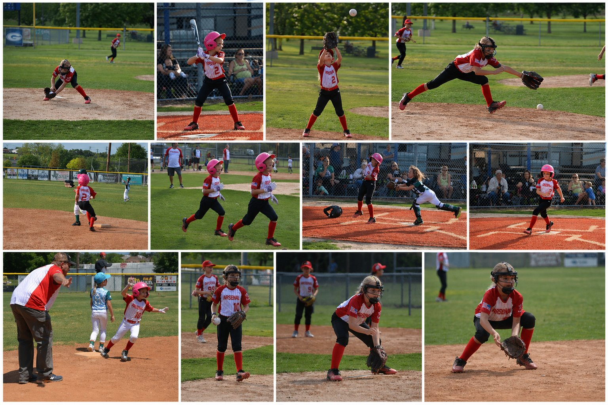
Becoming a Banana — Photo Diary
From the roster announcement to Fall 2024, from Midnight Madness championship nights to 13-hour tournament marathons — Kassidy's Bananas era documented in full.
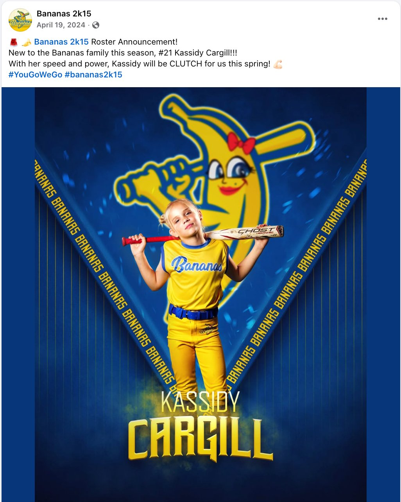
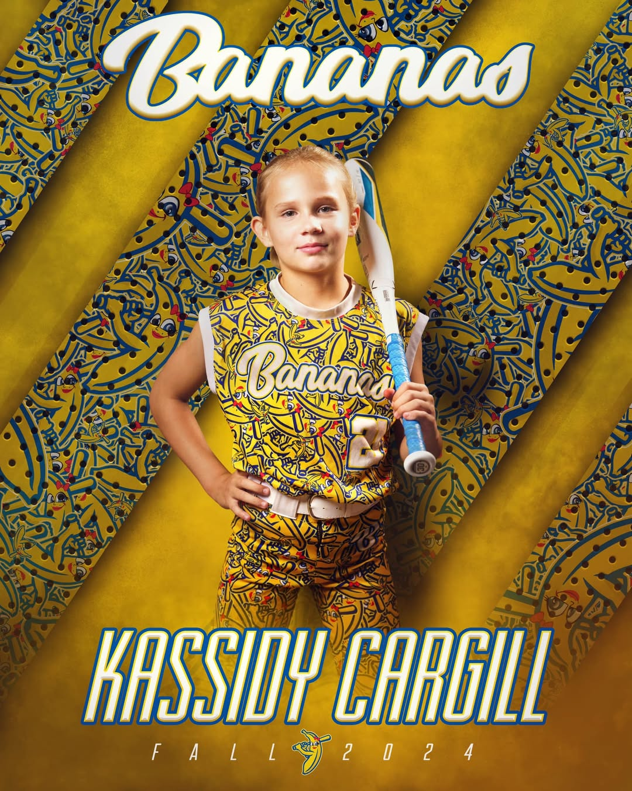
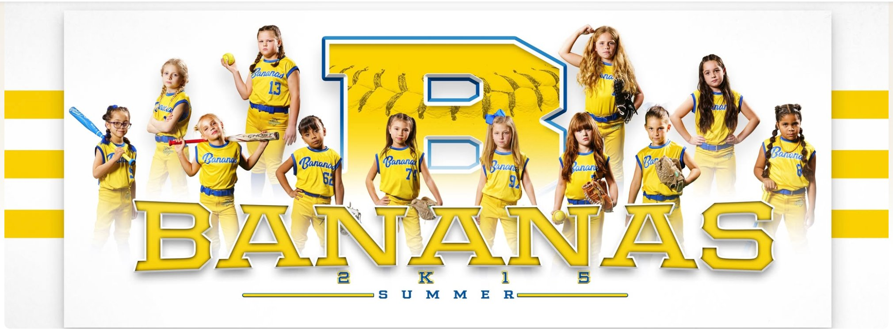
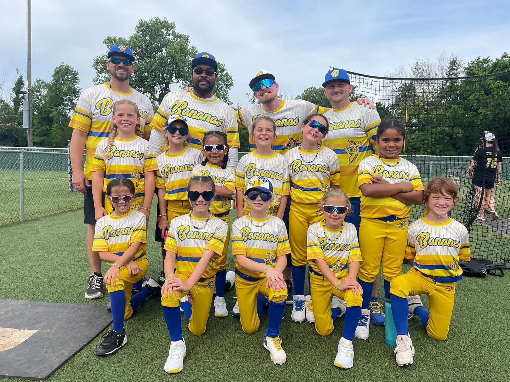
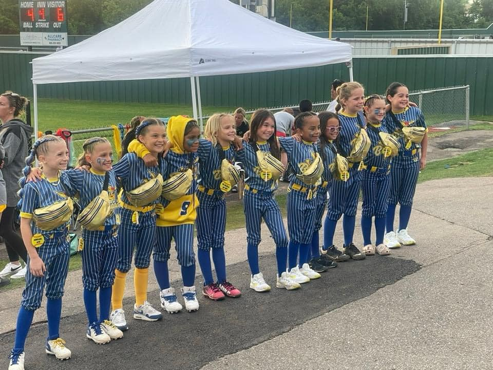
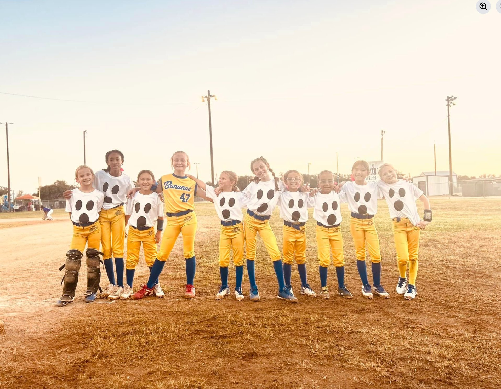
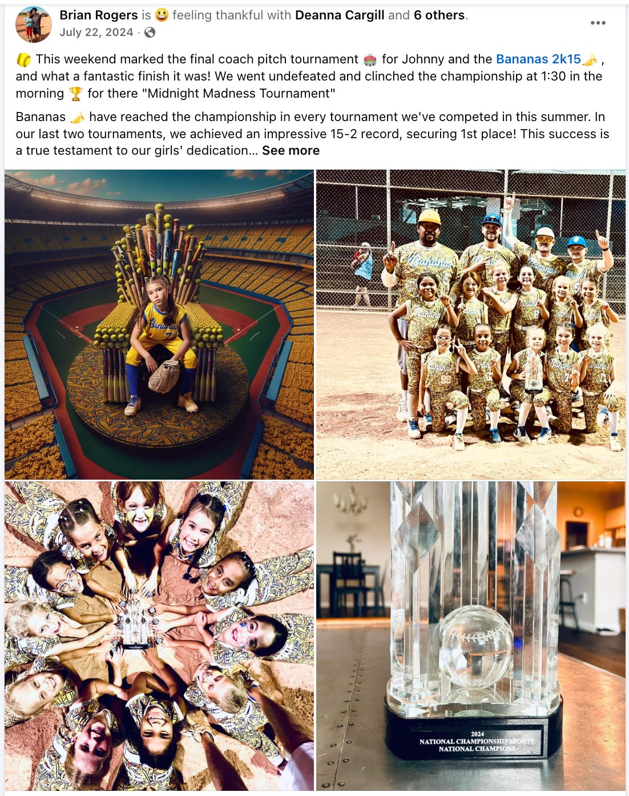
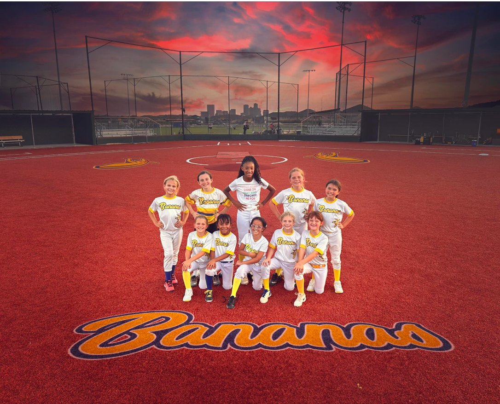
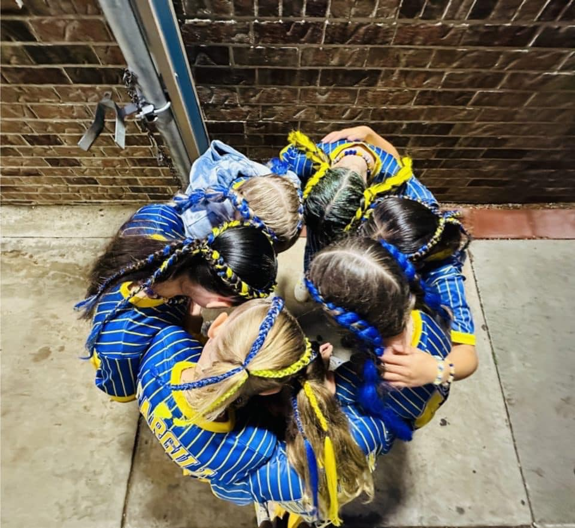
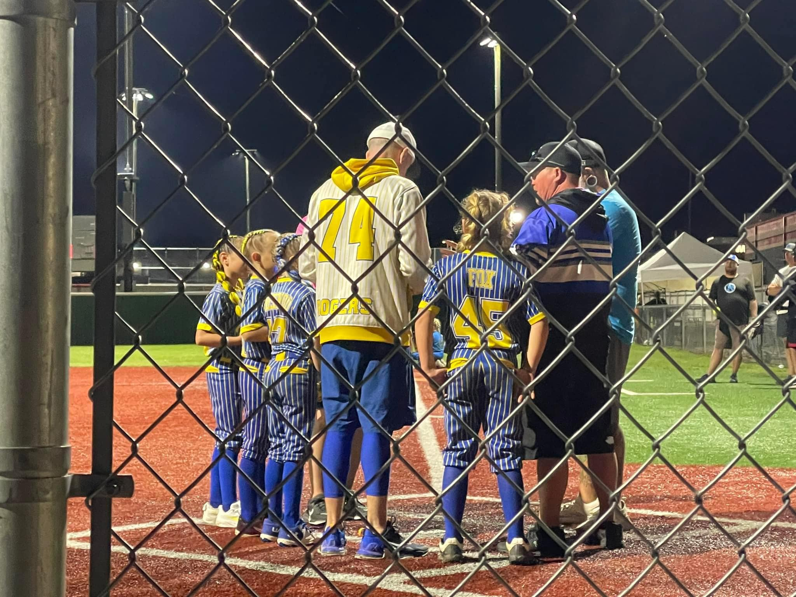
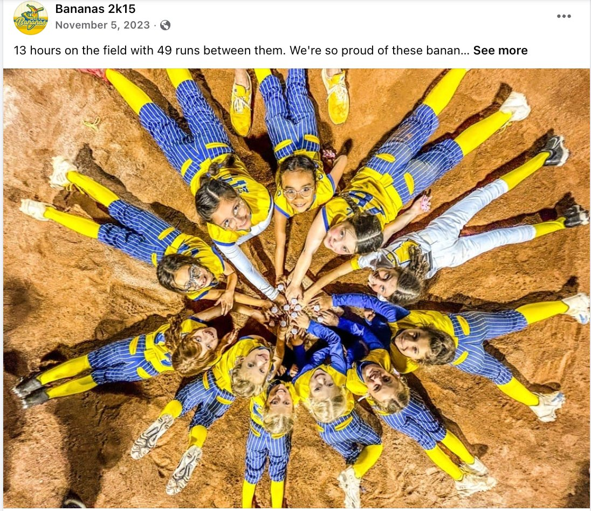
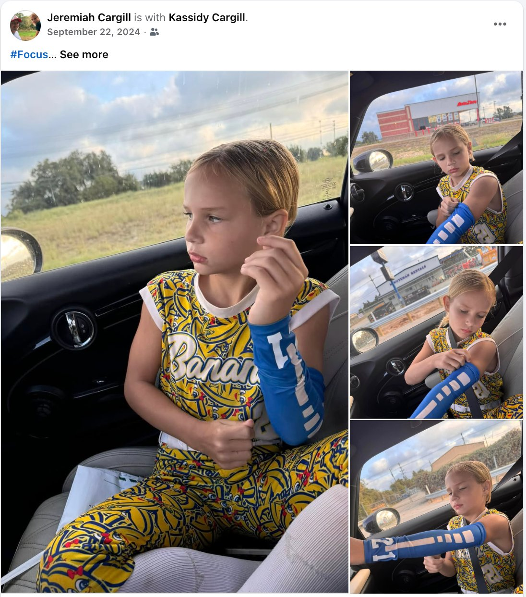
Scouting Attributes — 2023 Observed
Ratings derived from documented game commentary, coach feedback, and play-by-play records from the blog. Not self-reported.
Player Identity Evolution
Boys baseball foundation
Full infield + pitching
Under demanding coaching
All three phases of game
Key Traits Identified
Versatility across all infield and outfield positions. Speed and athleticism — documented from baserunning and from tagging out runners from left field. Physical toughness forged in boys baseball. Fast game-IQ growth visible within single-game corrections. Strong and immediate response to demanding coaching. A competitive drive that showed up specifically in high-pressure situations — performing her best on the day the league president came to watch.
What the record also shows: she did not disengage under mistreatment. She stayed on task, made plays, and when the environment finally matched her level, she delivered immediately and helped produce a triple championship.
Character Verdict
Kassidy Cargill's 2023 season is a story most athletes never have to live through: benched, rotated to outfield as an afterthought, and told by a coach she isn't coachable — then, in the same season, earning genuine respect from some of the hardest coaches in the league by making plays that mattered in games that counted.
The defining image isn't a trophy. It's Kassidy tagging out runners from left field while the league president watched — quiet, composed, proving the only point that needed proving. The nickname earned that day — Clutch Cargill — fits the full body of evidence.
What the blog documents isn't just athletic ability. It's a kid who came out of boys baseball, walked into a situation designed to diminish her, and when given real opportunity, responded with focus, hustle, coachability, and speed. The coaches who pushed hardest recognized her first. The team that let her play won everything.
Her own words, walking off the Macaws field for the last time: "I just want to play baseball." That's the whole character right there.